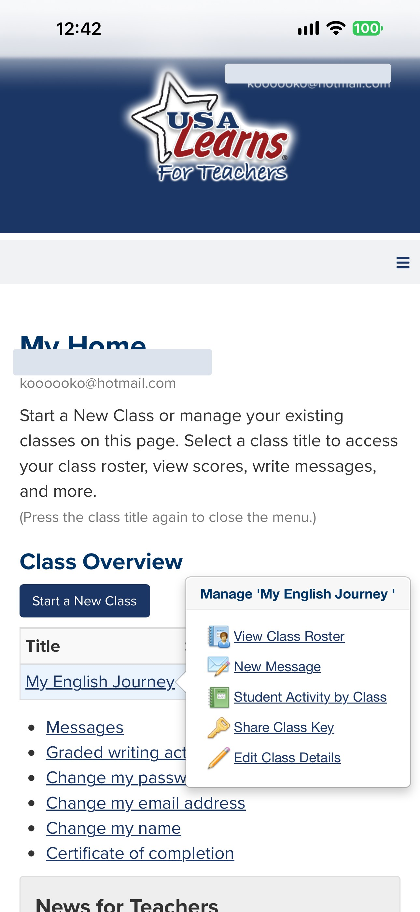
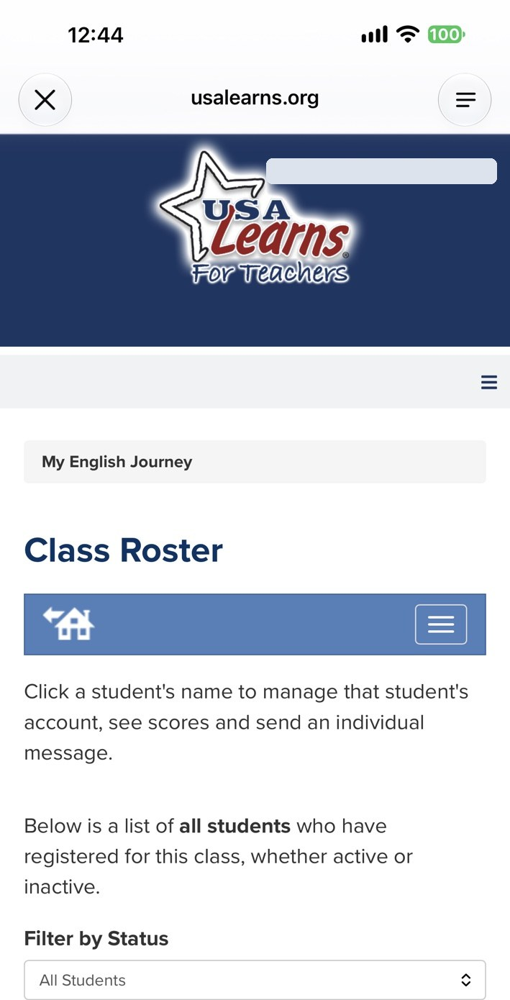

نتائج وشواهد المعلمة حكيمة المطيري
فصل My English Journey | تقرير النشاط: ١ سبتمبر – ٣١ أكتوبر ٢٠٢٦
٧ س و١٦ دإجمالي وقت التعلم المسجل
٢١طالبة في تقرير النشاط
٢٠طالبة لديهن وقت تعلم مسجل
📊 نشاط الطالبات في التقرير
نشاط مسجل
٢٠
دون وقت مسجل
١
الفترة: ١ سبتمبر – ٣١ أكتوبر ٢٠٢٦. العدد من التقرير الأشمل، دون جمع التقريرين.
اعتمد التقرير الأشمل من سبتمبر إلى أكتوبر لتجنب تكرار احتساب النتائج.
شواهد التنفيذ

